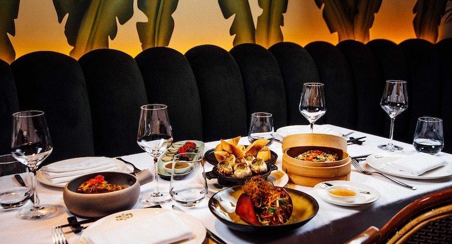

Want a website like one of those examples? Hire us to build it.

A great restaurant website design is not just beautiful, but effective as well. While some website designers focus strictly on the visual aspects, which can be easy to get carried away with when dealing with restaurants and food, others simply focus on creating a simple and useful website that is straight to the point. An effective website for restaurants blends both the visual aspects and usefulness into one design. It’s not easy to do and most restaurants are severely lacking in proper execution of their web presence. The perfect restaurant website design allows customers to find information like menus, location, hours of operation and contact info easily without too much distraction. However the customer must also get a sense of what this restaurant is about, their atmosphere, service and quality of food through the design aspects of the website. We have compiled a list of 50 well designed restaurant and food websites that we believe have successfully followed this idea. Take a look for yourself and get inspired by these restaurant website designs. 